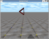

Tutorial:ODE y robots modulares:Cuerpos compuestos (II)

Contenido
[ocultar]Modelado de cuerpos compuestos (II)
| |
|
|

Introducción
En este ejemplo veremos cómo construir un cuerpo con forma de prisma, constituido por tres geometrías. La base es un triángulo isósceles. Las geometrías son hexaedros con el mismo grosor. Cada una de ellas está rotada y desplazada con respecto al centro de masas del cuerpo.
Objetivo
- Crear cuerpos compuestos complejos
Código
| Programa principal | |
| Creación y dibujo del cuerpo compuesto | |
| Definición de las constantes. | |
| Definición de los prototipos de body.cpp y las estructuras de datos. |
Compilación
Todos los ejemplos de este tutorial compilan tecleando "make". Sin embargo se describe a continuación cómo se compila directamente usando el GCC:
g++ -Iinclude -c -o compound2_ex/compound2.o compound2_ex/compound2.cpp g++ -Iinclude -c -o compound2_ex/body.o compound2_ex/body.cpp g++ -o compound2 compound2_ex/compound2.o compound2_ex/body.o libdrawstuff.a -lm -lode -lX11 -lm -lGL -lGLU
Ejecución
Para probar el ejemplo, teclear:
./compound2
Además de los mensajes impresos en pantalla por la drawstuff, aparecerá el siguiente menú:
Keys: 1: Drop the compound body q: Quit
La tecla '1' sitúa el cuerpo en su posición inicial, por lo que vuelve a caer. La tecla 'q' finaliza la simulación.
Capturas de pantalla
Visualización de la caida del cuerpo, en tres instantes diferentes:


Vídeo
|  |

Modelo del cuerpo

El cuerpo compuesto creado en este ejemplo es el mostrado en la Figura 1. Es un prisma de base triangular. Está compuesto de tres geometrías, que denominamos pieza 1, 2 y 3. Las piezas 1 y 2 son iguales. Tienen unas dimensiones de W x L1 x GROSOR, y están rotadas un ángulo <math>\varphi</math> alrededor del eje x. Las dimensiones de la pieza 3 son: W x H x GROSOR.
El cuerpo está en el interior de un hexaedro de dimensiones W x L x H y su centro de masas se encuentra en el centro. A partir de estos parámetros se calculas las constantes <math>L_{1}</math> y <math>\varphi</math>:
| <math>L_{1}=\sqrt[]{L^{2}+\left(\frac{H}{2}\right)^{2}}</math> | <math>\varphi=\arctan\left(\frac{H}{2L}\right)</math> |
La construcción del cuerpo se realiza mediante traslaciones y rotaciones de las piezas:
- Pieza 1: Rotación de <math>\varphi</math> alrededor del eje x. Desplazamiento de H/4 en el eje z
- Pieza 2: Rotación de <math>-\varphi</math> alrededor del eje x. Desplazamiento de -H/4 en el eje z
- Pieza 3: Rotación de 90 grados alrededor del eje x. Desplazamiento de -L/2 en el eje y
La estructura de datos del cuerpo es muy parecida a la del ejemplo del capítulo anterior, pero ahora son necesarias tres geometrías:
struct MyBody {
dBodyID body;
dGeomID geom[3];
};
Explicación del código
Este ejemplo sólo se diferencia del anterior en cómo se construye y dibuja el cuerpo (fichero body.cpp)
Parameters.h
En el fichero parameters.h están definidos los valores de todos los parámetros. A partir de ellos se calculan el ángulo Phi y L1:
#define L1 sqrt(L*L+H/2*H/2) #define PHI atan(H/(2*L))
Función Body_new()
Una vez creado el cuerpo, establecidas las dimensiones del hexaedro que lo contine y su masa, se crean las geometrías y se asocian a él:
body->geom[0] = dCreateBox (space, W, L1, THICKNESS); body->geom[1] = dCreateBox (space, W, L1, THICKNESS); body->geom[2] = dCreateBox (space, W, H, THICKNESS); dGeomSetBody (body->geom[0],body->body); dGeomSetBody (body->geom[1],body->body); dGeomSetBody (body->geom[2],body->body);
Ahora se aplican las rotaciones y desplazamientos necesarios a las geometrías para construir el cuerpo. Se usan las funciones dGeomSetOffsetRotation() y dGeomSetOffsetRotation():
//-- Piece 1 dRFromAxisAndAngle(R,1,0,0,-PHI); dGeomSetOffsetRotation(body->geom[0],R); dGeomSetOffsetPosition(body->geom[0], 0.0, 0.0,H/4); //-- Piece 2 dRFromAxisAndAngle(R,1,0,0,PHI); dGeomSetOffsetRotation(body->geom[1],R); dGeomSetOffsetPosition(body->geom[1], 0.0, 0.0,-H/4); //-- Piece 3 dRFromAxisAndAngle(R,1,0,0,-M_PI/2); dGeomSetOffsetRotation(body->geom[2],R); dGeomSetOffsetPosition(body->geom[2], 0.0, -L/2, 0.0);
Función Body_render()
La función de dibujado es muy sencilla. Se establece la textura y el color de todas las geometrías. A continuación se dibujan:
dsSetTexture (DS_WOOD);
dsSetColor (1,0,0);
for (int i=0; i<3; i++) {
drawGeom(body->geom[i]);
}
Enlaces
| |
|
|